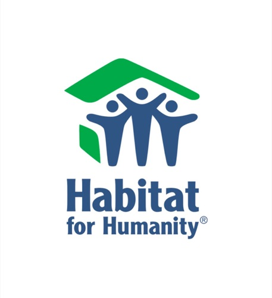
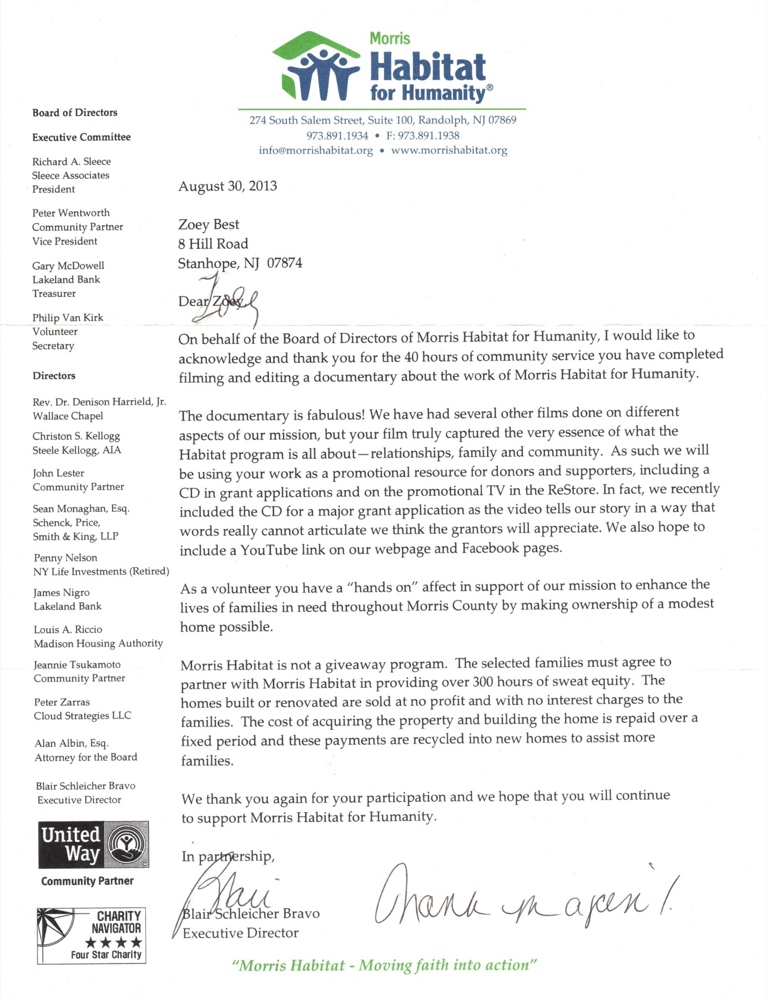
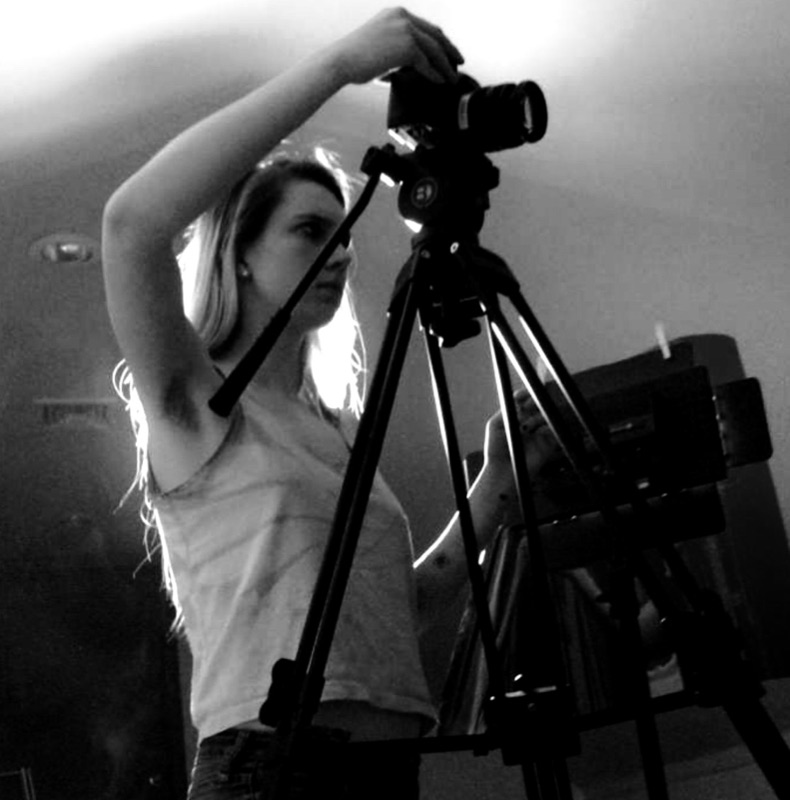

"When [Zoey] takes on a project, she isn't satisfied until everything is completed to perfection. She has a natural ability to think outside the box and inspire those around her towards greatness."



On Women in Leadership Positions...
"A fascinating, short, and succinct conversation with Victoria Morgan, a former San Francisco Ballet who is artistic director and CEO of Cincinnati Ballet and Wendy Whelan, for thirty years principal ballerina with New York City Ballet and now the company’s co-associate artistic director, is worthy of watching."

Zoey Best on set of
her short film 'Lithium'